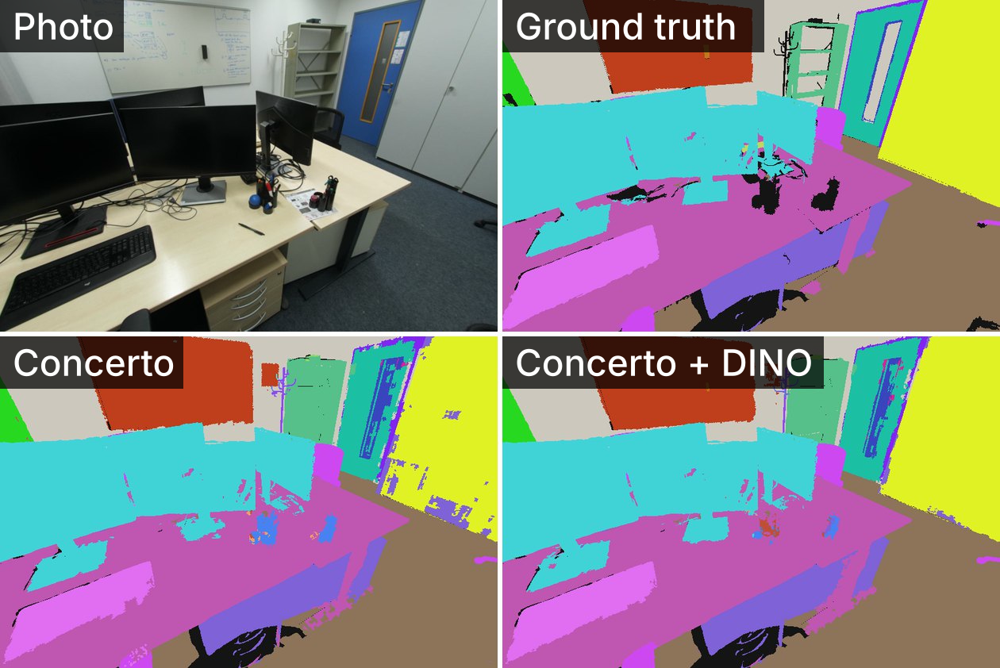

University of CambridgeMay 2026 — Present
Geometry-aware representations for colored point clouds
Undergraduate Research Assistant · Advisor: Prof. Cengiz Öztireli
Developing representations that jointly model 3D structure and surface color, with the aim of learning transferable geometry and appearance features across 3D vision tasks.
3D visionRepresentation learningGeometry & color